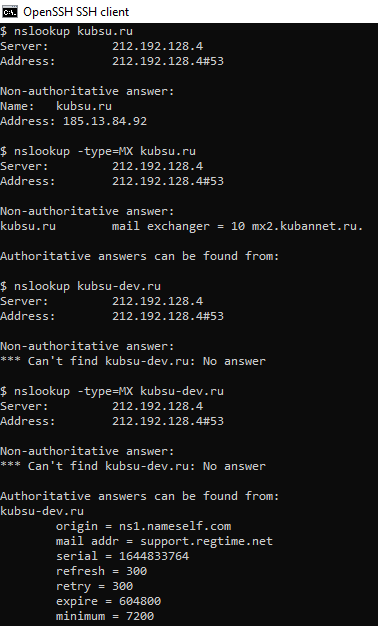
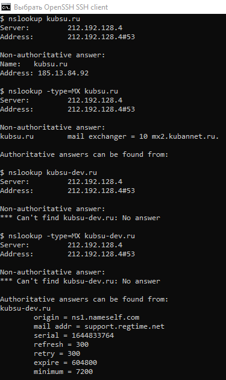
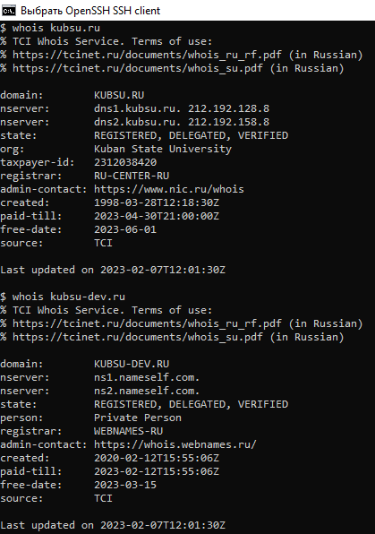
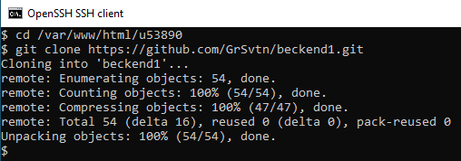
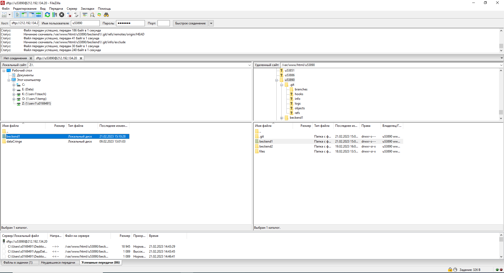

Подключаюсь к серверу kubsu-dev.ru (212.192.134.20) через ssh
Проверяю соедиенение с kubsu.ru от kubsu-dev.ru (212.192.134.20) командой ping, пересылая и получая пакеты с информацией
Командой nslookup просматриваю записи адреса (по умолчанию) и почтообменника kubsu.ru и kubsu-dev.ru (212.192.134.20)
Командой whois узнал дату регистрации доменов kubsu.ru и kubsu-dev.ru (212.192.134.20)
Скопировал с гит-репозиториян на сервер kubsu-dev.ru (212.192.134.20), используя команду git clone
С помощью программы Filezilla соединился с kubsu-dev.ru (212.192.134.20) по протоколу FTP и скопировал на компьтер файлы с сервера